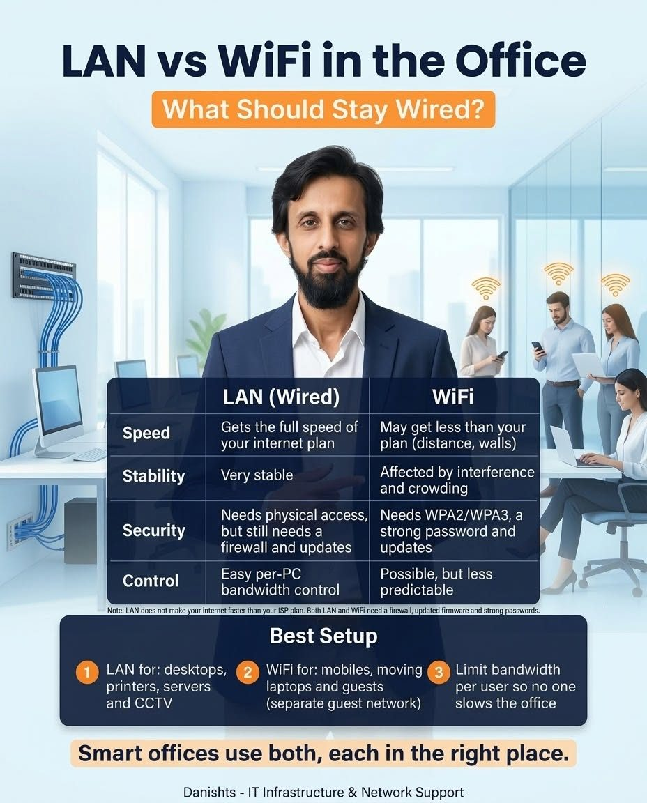

هل يلصق موظفوك بيانات خاصة في أدوات الذكاء الاصطناعي؟
قواعد بسيطة للاستخدام الآمن للذكاء الاصطناعي في العمل.
اقرأ المزيد →
من الإضافات والأدوات إلى أوامر الذكاء الاصطناعي
عمل كان يحتاج إلى كمبيوتر أصبح يتم الآن من هاتفي.
اقرأ المزيد →
تريد تعلّم الذكاء الاصطناعي؟ من الأساسيات إلى أول أتمتة لك
5 خطوات: ابدأ صغيرًا، وتدرّب يوميًا، وأتمت بذكاء.
اقرأ المزيد →
6 أسئلة تطرحها على مسؤول تقنية المعلومات لديك كل شهر
لست بحاجة إلى معرفة تقنية. تحتاج فقط إلى تقرير شهري.
اقرأ المزيد →
نقطة التعادل لـ ACoS: كم يمكنك إنفاقه على إعلانات أمازون؟
اعرف حدّك قبل الإطلاق.
اقرأ المزيد →
استخدم الذكاء الاصطناعي لاختيار الهاتف المناسب: ليس كل هاتف بذاكرة 8 جيجابايت سريعاً
ليس كل هاتف بذاكرة 8 جيجابايت سريعاً.
اقرأ المزيد →
التوثيق التقني للمكتب الصغير: 3 جداول تحتفظ بها
سواء كان مكتبك صغيرًا أو كبيرًا، دوّن ما يهم.
اقرأ المزيد →
ماذا تبيع على أمازون: اختر منتجك الأول حسب ميزانيتك
لكل منتج عليه طلب منافسة. ابدأ من ميزانيتك.
اقرأ المزيد →
كيف تختار مورداً لأمازون: قائمة تحقق Alibaba قبل الدفع
أين تبحث وكيف تتحقق من المورد.
اقرأ المزيد →
كلمات قائمة أمازون المفتاحية: خطة بسيطة خطوة بخطوة
وماذا تكتب في كل حقل.
اقرأ المزيد →
استراتيجية PPC لمنتج جديد على أمازون: يدوي أم تلقائي
ابدأ ببساطة، وتعلّم بسرعة، واحتفظ بما ينجح.
اقرأ المزيد →
تغييرات رسوم أمازون FBA في 2027 (أمريكا): المواعيد وما تفعله
المواعيد الرئيسية و3 خطوات لبائعي المتجر الأمريكي.
اقرأ المزيد →الذكاء الاصطناعي يغيّر الوظائف: 5 أمور تفعلها بدءًا من اليوم
خذ الأمر على محمل الجد. وابدأ اليوم.
اقرأ المزيد →
كيف تتعلم الذكاء الاصطناعي من الصفر: مسار من 6 خطوات للمبتدئين
لا حاجة إلى البرمجة. تكفي معرفة أساسية بالكمبيوتر.
اقرأ المزيد →
الأتمتة بالذكاء الاصطناعي لأعمالك: أساسيات واتساب والبريد
دع الذكاء الاصطناعي ينجز العمل المتكرر في نشاطك.
اقرأ المزيد →
إنترنت المكتب بطيء؟ 5 قواعد لإدارته بدلاً من شراء سرعة أعلى فقط
5 قواعد بسيطة لشبكة مكتب مستقرة.
اقرأ المزيد →
مكتب صغير؟ احمِ أجهزتك وبياناتك
4 خطوات بسيطة لأمان أجهزة PC والنسخ الاحتياطي.
اقرأ المزيد →
ACoS مقابل TACoS: ما الفرق؟
رقمان وسؤالان مختلفان، مع مثال بسيط.
اقرأ المزيد →
هل كاميرات المراقبة (CCTV) لديك آمنة من المخترقين؟
مخاطر كاميرات IP و6 حلول بسيطة.
اقرأ المزيد →
كاميرات المراقبة: DVR مقابل NVR مقابل كاميرا IP
أي نظام يناسب مكتبك، والإعداد المناسب حسب حجم المكتب.
اقرأ المزيد →
إعلانات PPC على أمازون: التكلفة التي تبدو عمياء
الحملات التلقائية مقابل اليدوية، ولماذا تخطط للميزانية أولاً.
اقرأ المزيد →
البريد الإلكتروني للأعمال: Google Workspace مقابل Microsoft 365 مقابل cPanel
cPanel أو Google Workspace أو Microsoft 365: المزايا والعيوب و4 قواعد للإعداد.
اقرأ المزيد →
كيف تجهّز صور قائمة منتجك على أمازون
قواعد الصورة الرئيسية و5 أنواع من الصور وقائمة تحقق من 6 خطوات.
اقرأ المزيد →
لماذا تفشل بعض منتجات أمازون في مرحلة البحث
أي مرحلة قد توقف المنتج، والفحص الأخير قبل أن تدفع.
اقرأ المزيد →
الكمبيوتر بطيء؟ ليس السبب دائماً الإنترنت
قائمة تحقق بسيطة من 6 خطوات للعناية بالكمبيوتر، تُنفَّذ مرتين شهرياً.
اقرأ المزيد →
ما الذي يجعل شبكة المكتب آمنة؟ 6 قواعد تقنية
فحص الأجهزة، وعرض النطاق الترددي، وVLAN، ونقاط الوصول، والنسخ الاحتياطي، ونطاق AD.
اقرأ المزيد →
الإنترنت يعمل، لكن مستخدمي الواي فاي لا يستطيعون الطباعة
لماذا يحدث ذلك عند وجود شبكتين، والحل البسيط.
اقرأ المزيد →
LAN مقابل الواي فاي في المكتب: ما الذي يجب أن يبقى بالكابل؟
أي الأجهزة تناسب LAN وأيها يناسب الواي فاي، ولماذا.
اقرأ المزيد →
ما الذي يجعل منتج أمازون جاهزًا؟ 7 خطوات
من البحث عن المنتجات إلى إعلانات PPC والإطلاق.
اقرأ المزيد →التفاوض مع موردي أمازون: تحدث مع 5 إلى 8 موردين
كيف تقارن بين الموردين وتحصل على الشروط كتابياً.
اقرأ المزيد →إعلانات PPC على أمازون: لماذا يحتاج كل إطلاق جديد إلى خطة
شرح الميزانية والمزايدة وACoS بمثال بسيط.
اقرأ المزيد →